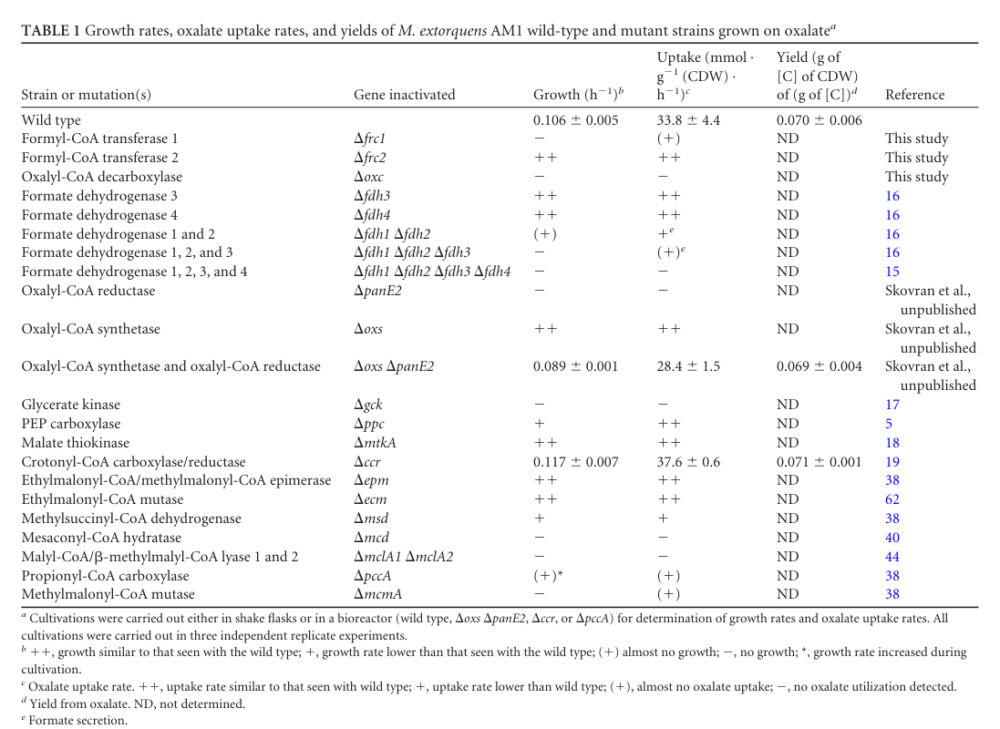

gltA encodes citrate synthase (EC 2.3.3.16), which catalyzes the first and committed step of the tricarboxylic acid (TCA) cycle: the condensation of acetyl-CoA and oxaloacetate with water to form citrate and free coenzyme A. This reaction represents the entry point for acetyl groups into the TCA cycle and is a major regulatory step in central carbon metabolism. The enzyme belongs to the citrate synthase family and functions in the cytoplasm. In methylotrophs, gltA plays a crucial role in channeling carbon from C1 compounds into the TCA cycle: methanol-derived carbon flows through the serine cycle → glycolysis → pyruvate → acetyl-CoA, and gltA condenses this acetyl-CoA with oxaloacetate to initiate the TCA cycle. The enzyme catalyzes step 1/2 in the conversion of oxaloacetate to isocitrate, with the citrate product being subsequently isomerized to isocitrate by aconitase. GltA is essential for both energy production (through complete oxidation of acetyl-CoA in the TCA cycle) and biosynthesis (by generating TCA cycle intermediates as biosynthetic precursors). The reaction is essentially irreversible under physiological conditions, making it a key control point for regulating carbon flow into the TCA cycle.
| GO Term | Evidence | Action | Reason |
|---|---|---|---|
|
GO:0005737
cytoplasm
|
IEA
GO_REF:0000002 |
ACCEPT |
Summary: Citrate synthase is a cytoplasmic enzyme that functions in the TCA cycle. This is the primary cellular location for the enzyme. [file:METEA/gltA/gltA-uniprot.txt, "C:cytoplasm"] The falcon deep research notes that this localization is a strong inference from bacterial biochemistry rather than directly demonstrated for AM1 GltA, as no direct subcellular localization experiment was retrieved.
Supporting Evidence:
file:METEA/gltA/gltA-deep-research-falcon.md
Citrate synthase in bacteria is generally a **soluble enzyme of central carbon metabolism**, expected to function in the **cytosol**
|
|
GO:0006099
tricarboxylic acid cycle
|
IEA
GO_REF:0000120 |
ACCEPT |
Summary: GltA catalyzes the first and committed step of the TCA cycle, the condensation of acetyl-CoA and oxaloacetate to form citrate. This is step 1/2 in the conversion of oxaloacetate to isocitrate. [file:METEA/gltA/gltA-uniprot.txt, "Carbohydrate metabolism; tricarboxylic acid cycle; isocitrate from oxaloacetate: step 1/2"] The falcon deep research confirms that M. extorquens AM1 uses the TCA cycle as part of the central metabolic core during multicarbon growth, with citrate synthase catalyzing entry of acetyl-CoA into the cycle, and that this oxidative core is maintained even as methylotrophy-specific pathways are induced during the switch to C1 growth.
Supporting Evidence:
file:METEA/gltA/gltA-deep-research-falcon.md
AM1 uses pathways common to heterotrophs including **the TCA cycle**
file:METEA/gltA/gltA-deep-research-falcon.md
citrate synthase is expected to support oxidative metabolism and precursor generation during multicarbon growth
|
|
GO:0016740
transferase activity
|
IEA
GO_REF:0000043 |
KEEP AS NON CORE |
Summary: This is a very general parent term for all enzymes that transfer functional groups. While technically correct, the more specific terms GO:0016746 and GO:0036440 provide better functional annotation.
|
|
GO:0016746
acyltransferase activity
|
IEA
GO_REF:0000043 |
KEEP AS NON CORE |
Summary: This accurately describes the enzymatic mechanism - GltA is an acyltransferase that transfers the acetyl group from acetyl-CoA to oxaloacetate, forming citrate. [file:METEA/gltA/gltA-uniprot.txt, "Acyltransferase"] The falcon deep research describes the same reaction, the condensation of oxaloacetate and acetyl-CoA to form citrate with release of CoA. This is a correct but general parent of the specific citrate synthase activity (GO:0036440).
Reason: Correct description of the transfer mechanism, but the specific citrate synthase activity term (GO:0036440) captures the molecular function more precisely and is the core MF.
Supporting Evidence:
file:METEA/gltA/gltA-deep-research-falcon.md
condensing **oxaloacetate (OAA)** and **acetyl‑CoA** to form **citrate**
|
|
GO:0036440
citrate synthase activity
|
IEA
GO_REF:0000120 |
ACCEPT |
Summary: This is the primary and specific catalytic activity of GltA - the condensation of acetyl-CoA and oxaloacetate to form citrate and CoA. This is the first step of the TCA cycle. [file:METEA/gltA/gltA-uniprot.txt, "Citrate synthase"; "oxaloacetate + acetyl-CoA + H2O = citrate + CoA + H(+)"] The falcon deep research independently affirms this as the family-wide function of gltA-encoded citrate synthases, catalyzing the first committed step of the oxidative TCA cycle, and notes that functional annotation of citrate synthases should rely on active-site conservation and pathway context rather than oligomerization state, since quaternary structure can vary across orthologs without major catalytic changes.
Supporting Evidence:
file:METEA/gltA/gltA-deep-research-falcon.md
catalyzing OAA + acetyl‑CoA → citrate (first step of the TCA cycle)
file:METEA/gltA/gltA-deep-research-falcon.md
functional annotation should rely on active-site conservation and pathway context rather than oligomerization state alone
|
|
GO:0046912
acyltransferase activity, acyl groups converted into alkyl on transfer
|
IEA
GO_REF:0000002 |
KEEP AS NON CORE |
Summary: This is a more detailed mechanistic description of the acyltransferase reaction where the acetyl group (acyl) from acetyl-CoA is transferred and becomes part of citrate as a C-C bond (alkyl linkage). This accurately describes the citrate synthase mechanism. [file:METEA/gltA/gltA-uniprot.txt, "oxaloacetate + acetyl-CoA + H2O = citrate + CoA + H(+)"] GO:0036440 (citrate synthase activity) is the direct child of this term and is the more informative, core molecular function for GltA.
Reason: Mechanistically accurate parent term, but GO:0036440 (citrate synthase activity) is the specific child term that should serve as the core MF.
Supporting Evidence:
file:METEA/gltA/gltA-deep-research-falcon.md
the **first committed step of the oxidative tricarboxylic acid (TCA) cycle**
|
The research report should be a detailed narrative explaining the function, biological processes, and localization of the gene product. Citations should be given for all claims.
You should prioritize authoritative reviews and primary scientific literature when conducting research. You can supplement
this with annotations you find in gene/protein databases, but these can be outdated or inaccurate.
We are specifically interested in the primary function of the gene - for enzymes, what reaction is catalyzed, and what is the substrate specificity? For transporters, what is the substrate? For structural proteins or adapters, what is the broader structural role? For signaling molecules, what is the role in the pathway.
We are interested in where in or outside the cell the gene product carries out its function.
We are also interested in the signaling or biochemical pathways in which the gene functions. We are less interested in broad pleiotropic effects, except where these elucidate the precise role.
Include evidence where possible. We are interested in both experimental evidence as well as inference from structure, evolution, or bioinformatic analysis. Precise studies should be prioritized over high-throughput, where available.
UniProt target provided by user: C5AU34 from Methylorubrum extorquens AM1 (syn. Methylobacterium extorquens AM1), annotated as citrate synthase (citrate synthase family; bacterial-type citrate synthase domains). This matches the canonical interpretation of the bacterial gene symbol gltA as encoding citrate synthase (CS).
Direct in-corpus evidence linking “gltA” → citrate synthase: In Pseudomonas aeruginosa, deletion/mutation of gltA is explicitly described as mutation of citrate synthase gltA, demonstrating that in bacterial genetics literature gltA commonly denotes citrate synthase. (2023-01-05 publication date; URL: https://doi.org/10.1128/spectrum.03239-22) (chen2023pseudomonasaeruginosacitrate pages 1-2)
Caveat (critical): Within the retrieved M. extorquens AM1 papers inspected here, the locus tag / UniProt accession C5AU34 is not explicitly cross-referenced in the text fragments available, and the string “gltA” was not observed in those AM1 fragments. Therefore, organism+protein identity is supported strongly by UniProt context provided by the user and by general bacterial usage of “gltA,” but a within-paper mapping (e.g., “gltA (META1_xxxx) encodes citrate synthase”) could not be confirmed from the retrieved text segments.
Citrate synthase catalyzes the first committed step of the oxidative tricarboxylic acid (TCA) cycle, condensing oxaloacetate (OAA) and acetyl‑CoA to form citrate (classically with release of CoA-SH). A 2024 phylogeny/structural study frames citrate synthase as catalyzing “the first step of the citric acid cycle” and uses this highly conserved function as the basis for comparing CS orthologs across prokaryotes. (Published 2024; URL: https://doi.org/10.1038/s41467-024-54408-6) (sendker2024frequenttransitionsin pages 2-3)
In facultative methylotrophs such as M. extorquens AM1, central metabolism reconfigures substantially between multicarbon growth (where “common” heterotrophic pathways including the TCA cycle are used) and methylotrophic growth, which requires additional pathways. (Published 2010-11-24; URL: https://doi.org/10.1371/journal.pone.0014091) (skovran2010asystemsbiology pages 1-2)
Citrate synthase in bacteria is generally a soluble enzyme of central carbon metabolism, expected to function in the cytosol as part of the oxidative TCA cycle. This cellular localization is a strong inference from bacterial biochemistry rather than directly demonstrated in the retrieved AM1 texts.
M. extorquens AM1 is a facultative methylotroph capable of growth on C1 compounds (e.g., methanol) and multicarbon compounds (e.g., succinate). The two growth modes employ “dramatically different central metabolic pathways with limited pathway overlap.” Under multicarbon substrates, AM1 uses pathways common to heterotrophs including the TCA cycle. (skovran2010asystemsbiology pages 1-2)
During a controlled transition from succinate-limited growth to methanol exposure, AM1 exhibited a sharp reduction in biomass-directed carbon flux, consistent with a major reset of central metabolism. (skovran2010asystemsbiology pages 1-2)
In the succinate→methanol transition experiment:
- Estimated carbon flux to biomass dropped from ~30 nmol C·min⁻¹·mL culture⁻¹ to ~0.2 nmol C·min⁻¹·mL culture⁻¹ immediately after the shift (>2 orders of magnitude). (skovran2010asystemsbiology pages 1-2)
- A ~2 h lag occurred before growth resumed on methanol; methanol began to drop within 15–30 min after addition; ~30 mM methanol remained at 6 h. (skovran2010asystemsbiology pages 1-2)
- Early after methanol addition, ~1/3 of oxidized methanol-derived carbon accumulated transiently in extracellular formaldehyde+formate pools, with the remainder as CO2; by ~2 h, total flux to formaldehyde+formate+CO2 was ~32 nmol·min⁻¹·(mL at 1 OD)⁻¹, ~3/4 of the reported full flux in methanol-grown cells (41.5 nmol·min⁻¹·(mL at 1 OD)⁻¹). (skovran2010asystemsbiology pages 2-3)
These results support a model in which AM1 can rapidly oxidize methanol, but assimilation into biomass is transiently bottlenecked. The oxidative TCA cycle (with citrate synthase as the entry step) is part of the multicarbon growth “core,” and TCA-linked precursor homeostasis likely remains important during the switch even as methylotrophy-specific pathways are induced. (skovran2010asystemsbiology pages 1-2, skovran2010asystemsbiology pages 2-3)
A 2012 Journal of Bacteriology study analyzed AM1 growth on oxalate using proteomics, mutants, and labeling; it highlights that AM1 has “plastic central metabolism” featuring multiple assimilation routes for C1/C2 substrates. (Published 2012-06; URL: https://doi.org/10.1128/JB.00288-12) (schneider2012oxalylcoenzymeareduction pages 1-2)
This work focuses on oxalate assimilation feeding into the serine cycle and the methylotrophy-associated ethylmalonyl‑CoA (EMC) pathway, which regenerates glyoxylate and supports assimilation strategies. While citrate synthase itself is not the subject of this paper, the metabolic diagrams emphasize that these assimilation routes connect into broader central metabolism. (schneider2012oxalylcoenzymeareduction media cf3c1014, schneider2012oxalylcoenzymeareduction media 9c7d2161)
Quantitative oxalate-growth data (AM1):
- Wild type on oxalate: growth rate 0.106 ± 0.005 h⁻¹, oxalate uptake 33.8 ± 4.4 mmol·g⁻¹(CDW)·h⁻¹, biomass yield 0.070 ± 0.006 g[C] biomass per g[C] oxalate. (schneider2012oxalylcoenzymeareduction pages 2-3, schneider2012oxalylcoenzymeareduction media 7df50da4)
- oxs panE2 double mutant: growth rate 0.089 ± 0.001 h⁻¹, uptake 28.4 ± 1.5 mmol·g⁻¹(CDW)·h⁻¹, yield 0.069 ± 0.004 g[C]/g[C]. (schneider2012oxalylcoenzymeareduction pages 2-3, schneider2012oxalylcoenzymeareduction media 7df50da4)
These phenotypes demonstrate substantial central metabolic flux under non-methanol substrates and support the broader conclusion that AM1 flexibly routes carbon through assimilation modules that must ultimately interface with shared precursor/energy metabolism (for which the TCA cycle is central). (schneider2012oxalylcoenzymeareduction pages 1-2, schneider2012oxalylcoenzymeareduction pages 2-3, schneider2012oxalylcoenzymeareduction media cf3c1014)
A 2024 Nature Communications study surveyed citrate synthases across prokaryotic phylogeny using mass photometry, phylogenetics, and structural work, finding frequent transitions among oligomeric assemblies (e.g., dimeric vs hexameric and additional states) while functional experiments indicated that changes in assembly do not strongly influence enzyme catalysis. This supports a contemporary expert perspective that, for citrate synthase, quaternary structure can vary without major catalytic changes, implying that functional annotation should rely on active-site conservation and pathway context rather than oligomerization state alone. (Published 2024; URL: https://doi.org/10.1038/s41467-024-54408-6) (sendker2024frequenttransitionsin pages 1-2)
A 2024 Nature Communications study evolved traits from M. extorquens AM1 under low-methanol conditions to improve colonization-related performance, situating AM1 as a model for understanding trade-offs in methylotrophic metabolism that influence fitness in the phyllosphere. It also provides a quantitative, authoritative contextual statistic: global plant methanol emissions are estimated at ~100 Tg annually. (Published 2024; URL: https://doi.org/10.1038/s41467-024-50342-9) (zhang2024phosphoribosylpyrophosphatesynthetaseas pages 1-2)
A 2024 ASM paper (Applied and Environmental Microbiology) discusses glycine betaine utilization intersecting with methylotrophy and notes that in most bacteria glycine can be converted to serine→pyruvate and “ultimately oxidized in the TCA cycle,” explicitly linking non-C1 substrates to TCA oxidation in this clade; it also states that M. extorquens AM1 can use glycine betaine as a sole carbon and energy source (pathway not identified in that excerpt). (Published 2024-03-27; URL: https://doi.org/10.1128/aem.02090-23) (hying2024glycinebetainemetabolism pages 1-3)
Although not in M. extorquens, a 2023 study in P. aeruginosa shows that gltA/citrate synthase influences stringent response-mediated changes in antibiotic tolerance and virulence gene expression, illustrating that perturbing TCA entry can have broad regulatory consequences beyond energy metabolism. This is relevant when interpreting gltA knockouts or flux manipulations in engineered strains. (Published 2023-01-05; URL: https://doi.org/10.1128/spectrum.03239-22) (chen2023pseudomonasaeruginosacitrate pages 1-2)
Citrate synthase (GltA) is frequently a control point considered in metabolic engineering because it governs entry of acetyl‑CoA into oxidative metabolism and affects precursor supply and redox/energy balancing. While the retrieved AM1 engineering paper focused on itaconate production (2019; older than requested), recent engineering work in other methylotrophs explicitly overexpresses citrate synthase to increase TCA entry and improve product titers.
For example, a 2024 methanotroph study improved succinate production by combining adaptive laboratory evolution with genetic engineering, including overexpression of “the first enzyme of TCA cycle (citrate synthase).” This illustrates a real-world implementation strategy: raising OAA supply and CS capacity to drive organic-acid production. (Published 2024; URL: https://doi.org/10.1186/s12934-024-02557-0) (Note: this is outside AM1 but demonstrates current applied practice.)
Primary molecular function (high confidence): The protein encoded by gltA in bacteria is citrate synthase, catalyzing OAA + acetyl‑CoA → citrate (first step of the TCA cycle). This is explicitly affirmed for citrate synthases as a family in a 2024 high-impact paper. (sendker2024frequenttransitionsin pages 2-3)
Organism-level pathway role in AM1 (moderate-to-high confidence): AM1 uses the TCA cycle during multicarbon growth and rewires central metabolism during transition to methylotrophy; therefore citrate synthase is expected to support oxidative metabolism and precursor generation during multicarbon growth and to remain part of the shared “core” metabolite network that must be maintained across growth modes. (skovran2010asystemsbiology pages 1-2, skovran2010asystemsbiology pages 2-3)
Localization (moderate confidence, inference): As a soluble bacterial central-metabolism enzyme, AM1 GltA is expected to function in the cytosol; however, no direct subcellular localization experiment was retrieved here.
Regulatory/pleiotropic implications (contextual evidence): Perturbations to gltA/CS in bacteria can trigger broader regulatory programs (e.g., stringent response effects in P. aeruginosa), so phenotypes from AM1 gltA manipulations (if performed) should be interpreted in light of metabolic stress responses rather than purely as “TCA blocked.” (chen2023pseudomonasaeruginosacitrate pages 1-2)
| Study (year, DOI) | Condition/strain | Measurement type | Key quantitative results (with units) | Interpretation relevant to TCA/CS function |
|---|---|---|---|---|
| Schneider et al. 2012, 10.1128/JB.00288-12 | Methylobacterium extorquens AM1 wild type grown on oxalate | Growth rate, oxalate uptake, biomass yield | Growth rate: 0.106 ± 0.005 h⁻¹; oxalate uptake: 33.8 ± 4.4 mmol·g⁻¹(CDW)·h⁻¹; yield: 0.070 ± 0.006 g[C] biomass per g[C] oxalate (schneider2012oxalylcoenzymeareduction pages 2-3) | Demonstrates active central carbon metabolism during oxalotrophic growth; oxalate assimilation feeds serine-cycle/EMC-linked metabolism that must interface with TCA-derived precursor supply, consistent with a required citrate synthase step for oxidative central metabolism though CS itself was not directly assayed here. |
| Schneider et al. 2012, 10.1128/JB.00288-12 | oxs panE2 double mutant grown on oxalate | Growth rate, oxalate uptake, biomass yield | Growth rate: 0.089 ± 0.001 h⁻¹; oxalate uptake: 28.4 ± 1.5 mmol·g⁻¹(CDW)·h⁻¹; yield: 0.069 ± 0.004 g[C] biomass per g[C] oxalate (schneider2012oxalylcoenzymeareduction pages 2-3) | Reduced but retained growth/uptake supports metabolic plasticity and rerouting through C1/serine-cycle + EMC functions; this reinforces that downstream central metabolism remains connected and buffered, with citrate synthase expected to remain part of the shared oxidative core. |
| Schneider et al. 2012, 10.1128/JB.00288-12 | Wild type in bioreactor on oxalate | Oxalate uptake rate | 34 ± 4 mmol·g⁻¹(CDW)·h⁻¹ from three independent cultivations (schneider2012oxalylcoenzymeareduction pages 2-3) | Confirms substantial carbon flux through oxalotrophic central metabolism; supports the view that M. extorquens AM1 maintains robust flux into shared biosynthetic/TCA-connected nodes under non-methylotrophic conditions. |
| Skovran et al. 2010, 10.1371/journal.pone.0014091 | Succinate-limited chemostat before methanol addition | Carbon flux to biomass | Carbon flux to biomass dropped from ~30 nmol C·min⁻¹·mL culture⁻¹ before switch (skovran2010asystemsbiology pages 1-2) | Indicates substantial biomass-directed flux during multicarbon growth, where the TCA cycle is explicitly part of the active core metabolism; citrate synthase would be expected to catalyze entry of acetyl-CoA into this cycle. |
| Skovran et al. 2010, 10.1371/journal.pone.0014091 | Immediately after succinate→methanol switch | Carbon flux to biomass | Flux to biomass fell to ~0.2 nmol C·min⁻¹·mL culture⁻¹ in succinate-grown cells exposed to methanol; >2 orders-of-magnitude decrease (skovran2010asystemsbiology pages 1-2) | Shows acute reconfiguration of central metabolism during transition to methylotrophy; shared metabolites are maintained even while pathway usage changes, implying that TCA-linked nodes including citrate synthase remain part of the stable metabolic backbone. |
| Skovran et al. 2010, 10.1371/journal.pone.0014091 | Methanol-added transition culture | Lag phase / substrate use | ~2 h lag phase after switch; methanol concentration began to drop between 15–30 min post-addition; ~30 mM methanol remained at 6 h (skovran2010asystemsbiology pages 1-2) | Supports delayed re-establishment of biomass flux despite rapid methanol oxidation; citrate synthase is not directly measured, but the study emphasizes differential use of TCA versus methylotrophic pathways during adaptation. |
| Skovran et al. 2010, 10.1371/journal.pone.0014091 | First hour after methanol addition | Partitioning of methanol-derived carbon | Approximately 1/3 of carbon from methanol oxidation was in extracellular formaldehyde + formate pools, remainder in CO₂ (skovran2010asystemsbiology pages 2-3) | Highlights that early after the switch, carbon is oxidized rather than efficiently incorporated into biomass; this contrasts with multicarbon/TCA-supported growth and underscores the metabolic context in which shared TCA enzymes such as citrate synthase function. |
| Skovran et al. 2010, 10.1371/journal.pone.0014091 | ~2 h after methanol addition | Total flux to formaldehyde, formate, and CO₂ | ~32 nmol·min⁻¹·(mL at 1 OD)⁻¹ at 2 h, about 3/4 of full flux in methanol-grown cells; reference full flux in methanol-grown cells: 41.5 nmol·min⁻¹·(mL at 1 OD)⁻¹ (skovran2010asystemsbiology pages 2-3) | Indicates that oxidation capacity recovers before assimilatory biomass production fully resumes; central metabolism is therefore flux-buffered, with TCA-associated precursor maintenance separated from transient bottlenecks in methylotrophic assimilation. |
Table: This table compiles the main quantitative values retrieved from Schneider 2012 and Skovran 2010 that are relevant to central metabolism in Methylobacterium/Methylorubrum extorquens AM1. It is useful for anchoring functional annotation of citrate synthase/gltA in organism-specific metabolic context, even though these studies did not directly assay GltA.
Schneider et al. provide pathway-level visualizations of oxalate assimilation and its integration with serine-cycle/EMC metabolism, plus the quantitative Table 1 summarized above. (schneider2012oxalylcoenzymeareduction media 7df50da4, schneider2012oxalylcoenzymeareduction media cf3c1014, schneider2012oxalylcoenzymeareduction media 9c7d2161)
References
(chen2023pseudomonasaeruginosacitrate pages 1-2): Hao Chen, Xuetao Gong, Zheng Fan, Yushan Xia, Yongxin Jin, Fang Bai, Zhihui Cheng, Xiaolei Pan, and Weihui Wu. Pseudomonas aeruginosa citrate synthase glta influences antibiotic tolerance and the type iii secretion system through the stringent response. Feb 2023. URL: https://doi.org/10.1128/spectrum.03239-22, doi:10.1128/spectrum.03239-22. This article has 13 citations and is from a domain leading peer-reviewed journal.
(sendker2024frequenttransitionsin pages 2-3): Franziska L. Sendker, Tabea Schlotthauer, Christopher-Nils Mais, Yat Kei Lo, Mathias Girbig, Stefan Bohn, Thomas Heimerl, Daniel Schindler, Arielle Weinstein, Brain P. Metzger, Joseph W. Thornton, Arvind Pillai, Gert Bange, Jan M. Schuller, and Georg K.A. Hochberg. Frequent transitions in self-assembly across the evolution of a central metabolic enzyme. Nature Communications, Dec 2024. URL: https://doi.org/10.1038/s41467-024-54408-6, doi:10.1038/s41467-024-54408-6. This article has 15 citations and is from a highest quality peer-reviewed journal.
(skovran2010asystemsbiology pages 1-2): Elizabeth Skovran, Gregory J. Crowther, Xiaofeng Guo, Song Yang, and Mary E. Lidstrom. A systems biology approach uncovers cellular strategies used by methylobacterium extorquens am1 during the switch from multi- to single-carbon growth. PLoS ONE, 5:e14091, Nov 2010. URL: https://doi.org/10.1371/journal.pone.0014091, doi:10.1371/journal.pone.0014091. This article has 77 citations and is from a peer-reviewed journal.
(skovran2010asystemsbiology pages 2-3): Elizabeth Skovran, Gregory J. Crowther, Xiaofeng Guo, Song Yang, and Mary E. Lidstrom. A systems biology approach uncovers cellular strategies used by methylobacterium extorquens am1 during the switch from multi- to single-carbon growth. PLoS ONE, 5:e14091, Nov 2010. URL: https://doi.org/10.1371/journal.pone.0014091, doi:10.1371/journal.pone.0014091. This article has 77 citations and is from a peer-reviewed journal.
(schneider2012oxalylcoenzymeareduction pages 1-2): Kathrin Schneider, Elizabeth Skovran, and Julia A. Vorholt. Oxalyl-coenzyme a reduction to glyoxylate is the preferred route of oxalate assimilation in methylobacterium extorquens am1. Journal of Bacteriology, 194:3144-3155, Jun 2012. URL: https://doi.org/10.1128/jb.00288-12, doi:10.1128/jb.00288-12. This article has 49 citations and is from a peer-reviewed journal.
(schneider2012oxalylcoenzymeareduction media cf3c1014): Kathrin Schneider, Elizabeth Skovran, and Julia A. Vorholt. Oxalyl-coenzyme a reduction to glyoxylate is the preferred route of oxalate assimilation in methylobacterium extorquens am1. Journal of Bacteriology, 194:3144-3155, Jun 2012. URL: https://doi.org/10.1128/jb.00288-12, doi:10.1128/jb.00288-12. This article has 49 citations and is from a peer-reviewed journal.
(schneider2012oxalylcoenzymeareduction media 9c7d2161): Kathrin Schneider, Elizabeth Skovran, and Julia A. Vorholt. Oxalyl-coenzyme a reduction to glyoxylate is the preferred route of oxalate assimilation in methylobacterium extorquens am1. Journal of Bacteriology, 194:3144-3155, Jun 2012. URL: https://doi.org/10.1128/jb.00288-12, doi:10.1128/jb.00288-12. This article has 49 citations and is from a peer-reviewed journal.
(schneider2012oxalylcoenzymeareduction pages 2-3): Kathrin Schneider, Elizabeth Skovran, and Julia A. Vorholt. Oxalyl-coenzyme a reduction to glyoxylate is the preferred route of oxalate assimilation in methylobacterium extorquens am1. Journal of Bacteriology, 194:3144-3155, Jun 2012. URL: https://doi.org/10.1128/jb.00288-12, doi:10.1128/jb.00288-12. This article has 49 citations and is from a peer-reviewed journal.
(schneider2012oxalylcoenzymeareduction media 7df50da4): Kathrin Schneider, Elizabeth Skovran, and Julia A. Vorholt. Oxalyl-coenzyme a reduction to glyoxylate is the preferred route of oxalate assimilation in methylobacterium extorquens am1. Journal of Bacteriology, 194:3144-3155, Jun 2012. URL: https://doi.org/10.1128/jb.00288-12, doi:10.1128/jb.00288-12. This article has 49 citations and is from a peer-reviewed journal.
(sendker2024frequenttransitionsin pages 1-2): Franziska L. Sendker, Tabea Schlotthauer, Christopher-Nils Mais, Yat Kei Lo, Mathias Girbig, Stefan Bohn, Thomas Heimerl, Daniel Schindler, Arielle Weinstein, Brain P. Metzger, Joseph W. Thornton, Arvind Pillai, Gert Bange, Jan M. Schuller, and Georg K.A. Hochberg. Frequent transitions in self-assembly across the evolution of a central metabolic enzyme. Nature Communications, Dec 2024. URL: https://doi.org/10.1038/s41467-024-54408-6, doi:10.1038/s41467-024-54408-6. This article has 15 citations and is from a highest quality peer-reviewed journal.
(zhang2024phosphoribosylpyrophosphatesynthetaseas pages 1-2): Cong Zhang, Di-Fei Zhou, Meng-Ying Wang, Ya-Zhen Song, Chong Zhang, Ming-Ming Zhang, Jing Sun, Lu Yao, Xu-Hua Mo, Zeng-Xin Ma, Xiao-Jie Yuan, Yi Shao, Hao-Ran Wang, Si-Han Dong, Kai Bao, Shu-Huan Lu, Martin Sadilek, Marina G. Kalyuzhnaya, Xin-Hui Xing, and Song Yang. Phosphoribosylpyrophosphate synthetase as a metabolic valve advances methylobacterium/methylorubrum phyllosphere colonization and plant growth. Nature Communications, Jul 2024. URL: https://doi.org/10.1038/s41467-024-50342-9, doi:10.1038/s41467-024-50342-9. This article has 30 citations and is from a highest quality peer-reviewed journal.
(hying2024glycinebetainemetabolism pages 1-3): Zachary T. Hying, Tyler J. Miller, Chin Yi Loh, and Jannell V. Bazurto. Glycine betaine metabolism is enabled in methylorubrum extorquens pa1 by alterations to dimethylglycine dehydrogenase. Applied and Environmental Microbiology, Jul 2024. URL: https://doi.org/10.1128/aem.02090-23, doi:10.1128/aem.02090-23. This article has 6 citations and is from a peer-reviewed journal.

id: C5AU34
gene_symbol: gltA
product_type: PROTEIN
taxon:
id: NCBITaxon:272630
label: Methylorubrum extorquens AM1
description: 'gltA encodes citrate synthase (EC 2.3.3.16), which catalyzes the first
and committed step of the tricarboxylic acid (TCA) cycle: the condensation of acetyl-CoA
and oxaloacetate with water to form citrate and free coenzyme A. This reaction represents
the entry point for acetyl groups into the TCA cycle and is a major regulatory step
in central carbon metabolism. The enzyme belongs to the citrate synthase family
and functions in the cytoplasm. In methylotrophs, gltA plays a crucial role in channeling
carbon from C1 compounds into the TCA cycle: methanol-derived carbon flows through
the serine cycle → glycolysis → pyruvate → acetyl-CoA, and gltA condenses this acetyl-CoA
with oxaloacetate to initiate the TCA cycle. The enzyme catalyzes step 1/2 in the
conversion of oxaloacetate to isocitrate, with the citrate product being subsequently
isomerized to isocitrate by aconitase. GltA is essential for both energy production
(through complete oxidation of acetyl-CoA in the TCA cycle) and biosynthesis (by
generating TCA cycle intermediates as biosynthetic precursors). The reaction is
essentially irreversible under physiological conditions, making it a key control
point for regulating carbon flow into the TCA cycle.'
existing_annotations:
- term:
id: GO:0005737
label: cytoplasm
evidence_type: IEA
original_reference_id: GO_REF:0000002
review:
summary: Citrate synthase is a cytoplasmic enzyme that functions in the TCA cycle.
This is the primary cellular location for the enzyme. [file:METEA/gltA/gltA-uniprot.txt,
"C:cytoplasm"] The falcon deep research notes that this localization is a strong
inference from bacterial biochemistry rather than directly demonstrated for AM1
GltA, as no direct subcellular localization experiment was retrieved.
action: ACCEPT
additional_reference_ids:
- file:METEA/gltA/gltA-deep-research-falcon.md
supported_by:
- reference_id: file:METEA/gltA/gltA-deep-research-falcon.md
supporting_text: Citrate synthase in bacteria is generally a **soluble enzyme
of central carbon metabolism**, expected to function in the **cytosol**
- term:
id: GO:0006099
label: tricarboxylic acid cycle
evidence_type: IEA
original_reference_id: GO_REF:0000120
review:
summary: 'GltA catalyzes the first and committed step of the TCA cycle, the condensation
of acetyl-CoA and oxaloacetate to form citrate. This is step 1/2 in the conversion
of oxaloacetate to isocitrate. [file:METEA/gltA/gltA-uniprot.txt, "Carbohydrate
metabolism; tricarboxylic acid cycle; isocitrate from oxaloacetate: step 1/2"]
The falcon deep research confirms that M. extorquens AM1 uses the TCA cycle as
part of the central metabolic core during multicarbon growth, with citrate synthase
catalyzing entry of acetyl-CoA into the cycle, and that this oxidative core is
maintained even as methylotrophy-specific pathways are induced during the switch
to C1 growth.'
action: ACCEPT
additional_reference_ids:
- file:METEA/gltA/gltA-deep-research-falcon.md
supported_by:
- reference_id: file:METEA/gltA/gltA-deep-research-falcon.md
supporting_text: AM1 uses pathways common to heterotrophs including **the TCA
cycle**
- reference_id: file:METEA/gltA/gltA-deep-research-falcon.md
supporting_text: citrate synthase is expected to support oxidative metabolism
and precursor generation during multicarbon growth
- term:
id: GO:0016740
label: transferase activity
evidence_type: IEA
original_reference_id: GO_REF:0000043
review:
summary: This is a very general parent term for all enzymes that transfer functional
groups. While technically correct, the more specific terms GO:0016746 and GO:0036440
provide better functional annotation.
action: KEEP_AS_NON_CORE
- term:
id: GO:0016746
label: acyltransferase activity
evidence_type: IEA
original_reference_id: GO_REF:0000043
review:
summary: This accurately describes the enzymatic mechanism - GltA is an acyltransferase
that transfers the acetyl group from acetyl-CoA to oxaloacetate, forming citrate.
[file:METEA/gltA/gltA-uniprot.txt, "Acyltransferase"] The falcon deep research
describes the same reaction, the condensation of oxaloacetate and acetyl-CoA
to form citrate with release of CoA. This is a correct but general parent of
the specific citrate synthase activity (GO:0036440).
action: KEEP_AS_NON_CORE
reason: Correct description of the transfer mechanism, but the specific citrate
synthase activity term (GO:0036440) captures the molecular function more precisely
and is the core MF.
additional_reference_ids:
- file:METEA/gltA/gltA-deep-research-falcon.md
supported_by:
- reference_id: file:METEA/gltA/gltA-deep-research-falcon.md
supporting_text: condensing **oxaloacetate (OAA)** and **acetyl‑CoA** to form
**citrate**
- term:
id: GO:0036440
label: citrate synthase activity
evidence_type: IEA
original_reference_id: GO_REF:0000120
review:
summary: This is the primary and specific catalytic activity of GltA - the condensation
of acetyl-CoA and oxaloacetate to form citrate and CoA. This is the first step
of the TCA cycle. [file:METEA/gltA/gltA-uniprot.txt, "Citrate synthase"; "oxaloacetate
+ acetyl-CoA + H2O = citrate + CoA + H(+)"] The falcon deep research independently
affirms this as the family-wide function of gltA-encoded citrate synthases, catalyzing
the first committed step of the oxidative TCA cycle, and notes that functional
annotation of citrate synthases should rely on active-site conservation and pathway
context rather than oligomerization state, since quaternary structure can vary
across orthologs without major catalytic changes.
action: ACCEPT
additional_reference_ids:
- file:METEA/gltA/gltA-deep-research-falcon.md
supported_by:
- reference_id: file:METEA/gltA/gltA-deep-research-falcon.md
supporting_text: catalyzing OAA + acetyl‑CoA → citrate (first step of the TCA
cycle)
- reference_id: file:METEA/gltA/gltA-deep-research-falcon.md
supporting_text: functional annotation should rely on active-site conservation
and pathway context rather than oligomerization state alone
- term:
id: GO:0046912
label: acyltransferase activity, acyl groups converted into alkyl on transfer
evidence_type: IEA
original_reference_id: GO_REF:0000002
review:
summary: This is a more detailed mechanistic description of the acyltransferase
reaction where the acetyl group (acyl) from acetyl-CoA is transferred and becomes
part of citrate as a C-C bond (alkyl linkage). This accurately describes the
citrate synthase mechanism. [file:METEA/gltA/gltA-uniprot.txt, "oxaloacetate
+ acetyl-CoA + H2O = citrate + CoA + H(+)"] GO:0036440 (citrate synthase activity)
is the direct child of this term and is the more informative, core molecular
function for GltA.
action: KEEP_AS_NON_CORE
reason: Mechanistically accurate parent term, but GO:0036440 (citrate synthase
activity) is the specific child term that should serve as the core MF.
additional_reference_ids:
- file:METEA/gltA/gltA-deep-research-falcon.md
supported_by:
- reference_id: file:METEA/gltA/gltA-deep-research-falcon.md
supporting_text: the **first committed step of the oxidative tricarboxylic acid
(TCA) cycle**
core_functions:
- description: 'GltA catalyzes the condensation of acetyl-CoA and oxaloacetate with
water to form citrate and free coenzyme A, the first and committed step of the
TCA cycle. This reaction represents the entry point for acetyl groups into the
TCA cycle and is a key regulatory step in central carbon metabolism. In the context
of methylotrophic growth, gltA channels carbon from C1 compounds into the TCA
cycle: methanol-derived carbon flows through the serine cycle → glycolysis → pyruvate
→ acetyl-CoA, and gltA condenses this acetyl-CoA with oxaloacetate to initiate
citrate formation. The enzyme functions in the cytoplasm and belongs to the citrate
synthase family. The reaction is step 1/2 in the conversion of oxaloacetate to
isocitrate and is essentially irreversible under physiological conditions, making
it a critical control point for regulating carbon flow into energy production
and biosynthesis.'
molecular_function:
id: GO:0036440
label: citrate synthase activity
directly_involved_in:
- id: GO:0006099
label: tricarboxylic acid cycle
locations:
- id: GO:0005737
label: cytoplasm
supported_by:
- reference_id: file:METEA/gltA/gltA-uniprot.txt
supporting_text: 'oxaloacetate + acetyl-CoA + H2O = citrate + CoA + H(+)...Carbohydrate
metabolism; tricarboxylic acid cycle; isocitrate from oxaloacetate: step 1/2'
- reference_id: file:METEA/gltA/gltA-deep-research-falcon.md
supporting_text: Citrate synthase catalyzes the **first committed step of the oxidative
tricarboxylic acid (TCA) cycle**, condensing **oxaloacetate (OAA)** and **acetyl‑CoA**
to form **citrate**
- reference_id: file:METEA/gltA/gltA-deep-research-falcon.md
supporting_text: citrate synthase is expected to support oxidative metabolism and
precursor generation during multicarbon growth
references:
- id: file:METEA/gltA/gltA-deep-research-falcon.md
title: Falcon deep research report on gltA (citrate synthase, C5AU34) in Methylorubrum
extorquens AM1
findings:
- statement: gltA encodes citrate synthase, which catalyzes the first committed step
of the oxidative TCA cycle, condensing oxaloacetate and acetyl-CoA to form citrate.
supporting_text: Citrate synthase catalyzes the **first committed step of the oxidative
tricarboxylic acid (TCA) cycle**, condensing **oxaloacetate (OAA)** and **acetyl‑CoA**
to form **citrate**
reference_section_type: OTHER
- statement: The bacterial gene symbol gltA canonically denotes citrate synthase,
catalyzing the first step of the citric acid cycle.
supporting_text: the first step of the citric acid cycle
reference_section_type: OTHER
- statement: In bacterial genetics literature, deletion or mutation of gltA is explicitly
described as mutation of citrate synthase, confirming the gltA-citrate synthase
identity.
supporting_text: deletion/mutation of **gltA** is explicitly described as mutation
of **citrate synthase gltA**
reference_section_type: OTHER
- statement: Citrate synthase is a soluble bacterial central-metabolism enzyme expected
to function in the cytosol; this localization is inferred from biochemistry rather
than directly demonstrated for AM1 GltA.
supporting_text: Citrate synthase in bacteria is generally a **soluble enzyme of
central carbon metabolism**, expected to function in the **cytosol**
reference_section_type: OTHER
- statement: M. extorquens AM1 uses the TCA cycle as part of the central metabolic
pathways common to heterotrophs during multicarbon growth.
supporting_text: AM1 uses pathways common to heterotrophs including **the TCA cycle**
reference_section_type: OTHER
- statement: AM1 employs dramatically different central metabolic pathways with limited
overlap between multicarbon and methylotrophic growth modes.
supporting_text: dramatically different central metabolic pathways with limited
pathway overlap
reference_section_type: OTHER
- statement: Citrate synthase is expected to support oxidative metabolism and precursor
generation during multicarbon growth in AM1.
supporting_text: citrate synthase is expected to support oxidative metabolism and
precursor generation during multicarbon growth
reference_section_type: OTHER
- statement: For citrate synthase, quaternary (oligomeric) structure can vary across
orthologs without major catalytic changes, so functional annotation should rely
on active-site conservation and pathway context.
supporting_text: functional annotation should rely on active-site conservation and
pathway context rather than oligomerization state alone
reference_section_type: OTHER
- statement: Perturbing TCA entry via gltA can have broad regulatory consequences
beyond energy metabolism, relevant when interpreting gltA knockouts or flux manipulations.
supporting_text: perturbing TCA entry can have broad regulatory consequences beyond
energy metabolism
reference_section_type: OTHER
- id: file:METEA/gltA/gltA-uniprot.txt
title: UniProt entry for gltA citrate synthase
findings: []
- id: GO_REF:0000002
title: Gene Ontology annotation through association of InterPro records with GO
terms.
findings: []
- id: GO_REF:0000043
title: Gene Ontology annotation based on UniProtKB/Swiss-Prot keyword mapping
findings: []
- id: GO_REF:0000120
title: Combined Automated Annotation using Multiple IEA Methods.
findings: []
status: COMPLETE
{kind=link}